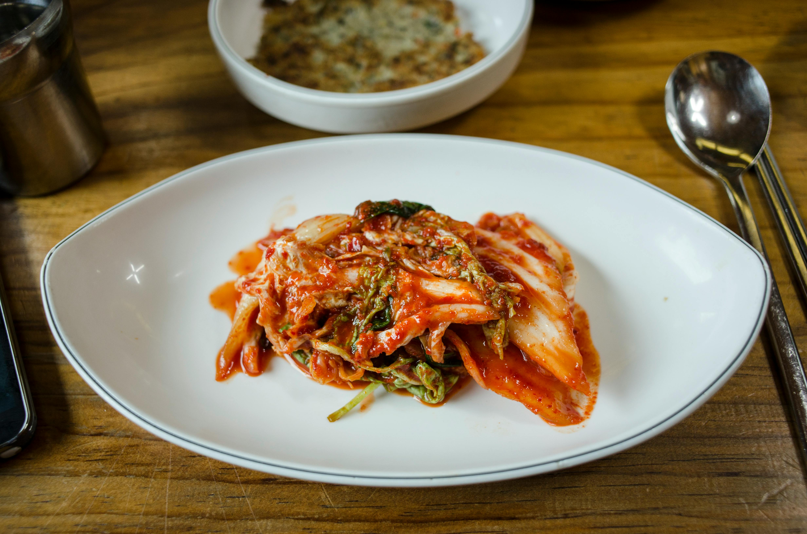

Kimchi (Napa Cabbage Kimchi)
by Plaid Aprons
Home

Description
Kimchi or more specifically, napa cabbage kimchi, one of the most popular banchan that's spicy, tangy, and funky. This recipe by "Two Plaid Aprons" is traditional and authentic, made with quartered napa cabbage, which means the process is a bit more labor intensive.
| Prep Time |
Cooking Time |
Total Time |
| 3 hrs 15 mins |
n.a. |
3 hrs 15 mins |
Ingredients
For the cabbage:
- 8 pounds napa cabbage (usually each head is around 4 pounds)
- Kosher Salt (about 2 cups, or as neded, for salting)
For the kimchi marinade:
- 1½ cup water
- ⅓ cup rice flour (regular or glutinous)
- 1 large apple (cut into smaller pieces and discard core; fuji, honey crisp, gala)
- 1 large onion
- 2 inch knob of ginger (peeled and julienned)
- ½ cup fish sauce
- 2 cups gochugaru (coarse) divided (also known as Korean red pepper flakes)
Additional veggies for the kimchi:
- 1 pound Korean radish (peeled and julienned)
- 6 ounces of carrots (peeled and julienned)
- 4 ounces of Asian chives (cut into 1 inch pieces; discard about 1 to 2 inches of the tough stem)
Steps
Clean and salt the napa cabbage:
- Peel away and discard any undesirable outer layer leaves of the napa cabbage.
- With the napa cabbage laying on its side, quarter the cabbage long ways. You can also just cut the stem area of the cabbage and rip the rest of the cabbage open with your hand. Repeat with remaining napa cabbage.
- Trim away the excess part of the cabbage core. Then, rinse and wash each quarter of the napa cabbage with water to remove any dirt. Make sure to pay extra attention to the few outer leaves. Drain the cabbage as best as you can.
- In a clean, sanitized area, salt each quarter of napa cabbage by sprinkling salt between each and every layer of leaves. Make sure to salt more generously around the stems. Repeat with all cabbages.
- Once all of the cabbages are salted, arrange and stack them in a large bowl. Cover and weigh down the cabbages with something heavy and let them salt for 1½ to 2 hours. Rotate the cabbages every 30 minutes, moving the ones on the top of the bottom.
- To check if the napa cabbage is done salting, rip off a small leaf of cabbage and rinse it with fresh water. Taste the cabbage. The cabbage will be very bendable and should taste well seasoned at the stem, while the leaf should be a little saltier but not unbearable. If the cabbage does not taste salty enough, continue with the salting process for another 30 minutes to 1 hour, until the desired saltiness is achieved.
Make the kimchi marinade:
- While the napa cabbages are salting, make the kimchi paste. First, make the rice flour paste by whisking together the rice flour and water until well combined. Transfer the mixture to a pan or saucepan and cook over medium to medium high heat, stirring occasionally. Once the paste starts to thicken, stir constantly until a thick and slightly translucent paste forms. Transfer to a large mixing bowl and let it cool.
- In a blender, add the apple, onion, garlic cloves, ginger, and fish sauce. Blend everything well until smooth. Add half of the gochugaru to the mix and continue to blend until well combined and as smooth as possible.
- Transfer the mixture to the bowl with the cold rice flour paste, along with the rest of gochugaru. With gloved hands, mix the paste until well combined. Then, add the Korean radish, carrot, and Asian chives and mix well. Set aside until needed.
Rinse the napa cabbage:
- Once the napa cabbages are done salting, rinse them with fresh water to remove the excess salt. Make sure to get between each leaf.
We like to rinse our napa cabbage in a large bowl of water, repeating the process about 2 to 3 times with fresh water. We recommend tasting the cabbage after the final rinse to check if the cabbage requires an additional round or two of rinsing.
- After the final rinse, gently but firmly squeeze each quarter of napa cabbage to remove most of the excess water. Important: Do not squeeze too hard or the stems may get bruised and damaged.
Marinate the napa cabbage:
- Working with gloved hands and one quarter of napa cabbage at a time, place the cabbage in the bowl with the prepared kimchi marinade. Take some marinade and rub it on each leaf. Make sure to also leave some of the julienned veggies in between each layer, too!
- Once the entire quarter of the cabbage has been marinated, fold the cabbage over itself to keep it tight. Repeat with the remaining cabbage.
- Pack the kimchi into sterilized glass jars or BPA free plastic kimchi containers. Make sure to pack the kimchi tightly, but leave about 1 inch of space between the kimchi and the lid. As the kimchi ferments, it will release juices and produce gas, so the extra room will help to prevent the kimchi from overflowing.
- The napa cabbage kimchi can be enjoyed immediately after marinating, or you can let it ferment until it reaches your desired fermentation stage (I usually let the jars sit at room temperature up to 7 days) before eating or used in cooking. Feel free to cut the kimchi into smaller pieces when ready to enjoy.
Enjoy!
Shout out to Mei & Kyong for this amazing recipe!
(click the picture to visit their blog)